★★★★★
Un restaurante que roza la perfección
El trato fue impecable desde el primer momento, tanto al reservar por teléfono como durante la comida.
Pocas mesas y una cocina que cambia sola. Nació en Consuegra en 2018 y en diciembre de 2020 se instaló en Alcázar: lo que se come cada semana depende de lo que llega esa mañana, no de una carta impresa hace un año.
La base es la despensa manchega —cordero, queso, azafrán, caza, el ajo de Las Pedroñeras— y encima va técnica: cocciones largas a baja temperatura, fondos reducidos y un punto de fusión que aparece sin pedir permiso.
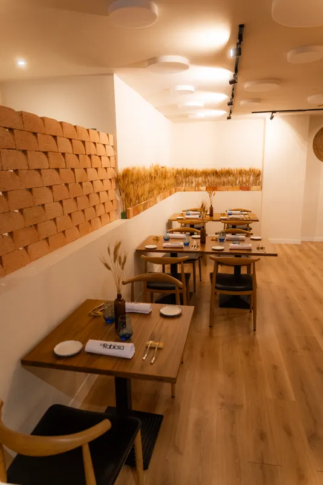


4,7 Google · 657 reseñas 4,8 Tripadvisor · 125 reseñas
El trato fue impecable desde el primer momento, tanto al reservar por teléfono como durante la comida.
Experiencia inolvidable. Trato del personal de diez.
El arroz, espectacular. Y el corte de carne nos supo a gloria.
Fue una experiencia gastronómica, sorprendente y especial.
Cocina tradicional con un toque moderno, muy bien conseguido.
La acogida al llegar fue muy buena y cercana, y siguió así todo el rato.
Qué suerte tiene Alcázar de contar con este restaurante.
Fue una experiencia gastronómica, sorprendente y especial.
Cocina tradicional con un toque moderno, muy bien conseguido.
La acogida al llegar fue muy buena y cercana, y siguió así todo el rato.
Qué suerte tiene Alcázar de contar con este restaurante.
El trato fue impecable desde el primer momento, tanto al reservar por teléfono como durante la comida.
Experiencia inolvidable. Trato del personal de diez.
El arroz, espectacular. Y el corte de carne nos supo a gloria.
No hay una lista de arroces: hay uno cada vez, hecho con lo que ha llegado esa mañana. Nunca es el mismo y no se puede pedir «el de la otra vez». Estos son algunos de los que han salido de la paella.
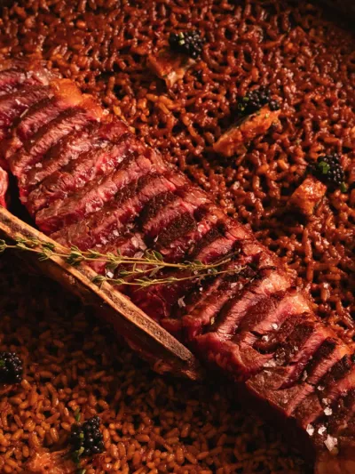
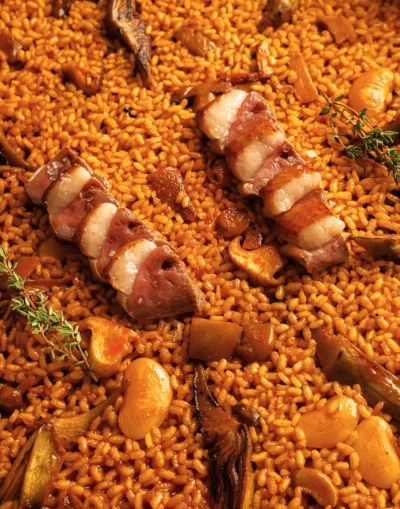
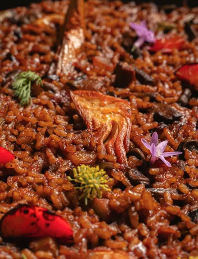
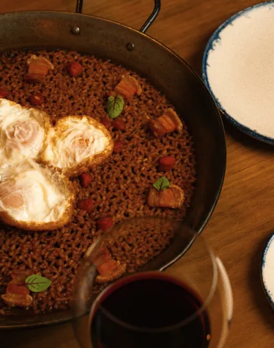
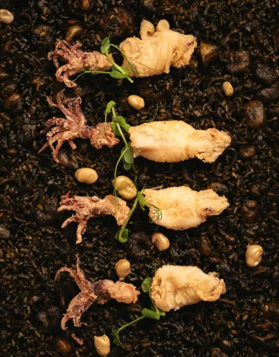
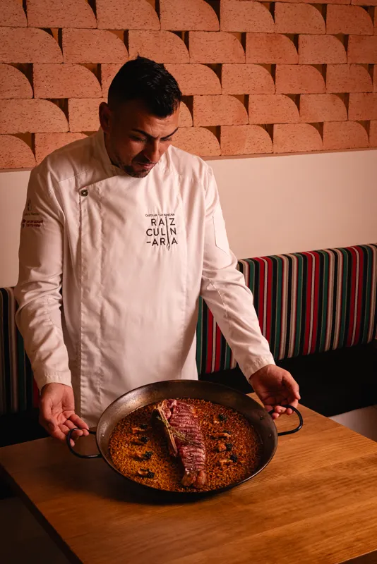
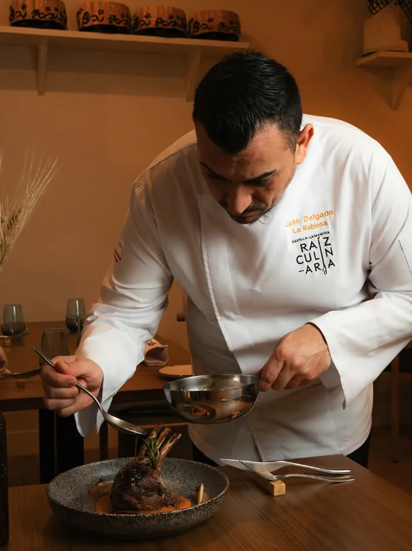
Natural de Consuegra, se formó y trabajó años en cocinas de Madrid antes de volver a La Mancha a montar casa propia.
Su cocina no le cambia el nombre a las cosas: el cordero sigue siendo cordero y el torrezno sigue siendo torrezno. Lo que cambia es la técnica que los atraviesa.
Forma parte de Raíz Culinaria, el proyecto de Castilla-La Mancha que reúne a los cocineros que trabajan la identidad gastronómica de la región.
La Rabiosa son dos. Juan en la cocina y Álex en la sala: el que te recibe, el que te cuenta el plato y el que decide lo que va en la copa.
Cuarenta plazas y una manera de hacer: se pregunta, se escucha y se recomienda. La bodega, pensada para esta cocina, la abre y la sirve él.
Si llamas para reservar, pregunta por Juan o por Álex. Contestan ellos.
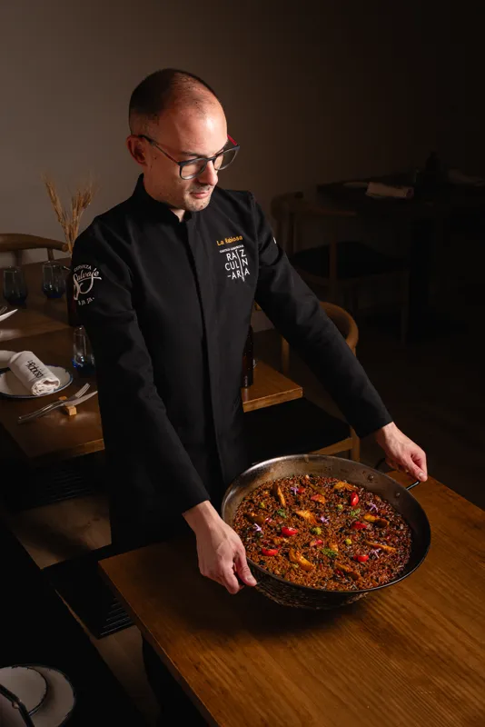
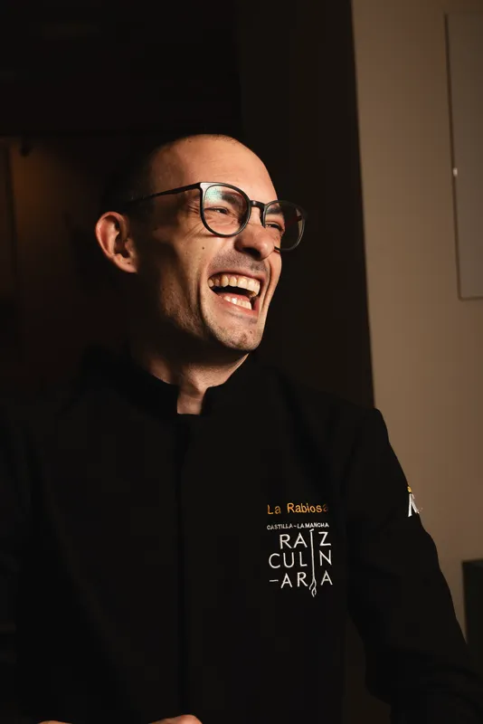
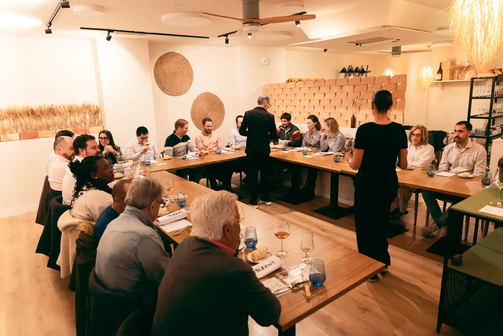
Una mesa larga y un producto de la zona como protagonista. Quien lo hace viene a presentarlo, y la cocina lo convierte en varios platos para catarlo juntos. Cada edición es única.
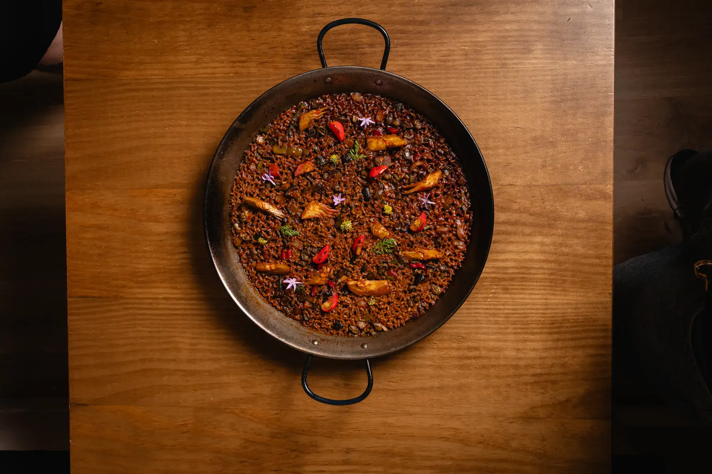
La casa es pequeña y se llena, sobre todo los fines de semana y cuando hay arroz de por medio.
O por teléfono
633 41 75 45Preguntad por Juan o por Álex. Para grupos de 6 o más, avisad con 24 horas.